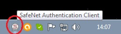
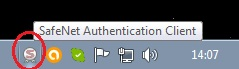
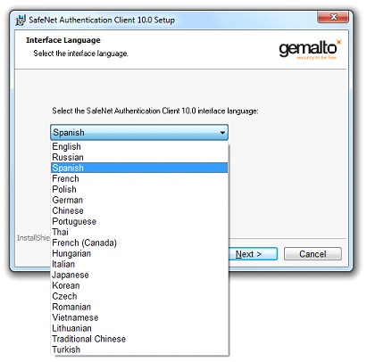
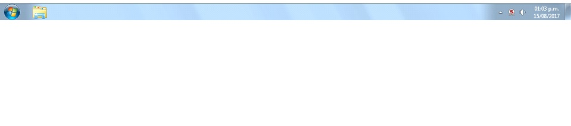
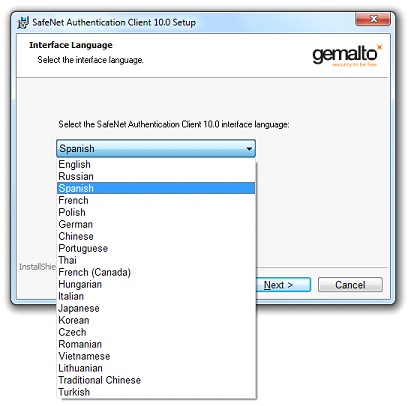
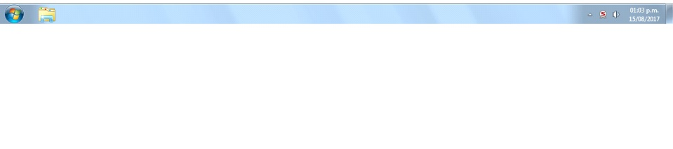

Preguntas Frecuentes
La contraseña lamentablemente no se puede recuperar. Se recomienda agotar los 15 intentos incorrectos probando diversas variables. Recuerde siempre respetar el patrón de seguridad: La contraseña debe contener de 8 a 16 caracteres que incluyan mayúsculas, minúsculas y números (los tres tipos si o si).
Si estos pasos no funcionan deberá reinicializar el dispositivo.
Si estos pasos no funcionan deberá reinicializar el dispositivo.
De bloquearse el dispositivo o no recordar la contraseña, para poder reutilizarlo es necesario reinicializarlo.
Recuerde que al hacerlo se borrará "TODO" lo que se encuentra almacenado en la memoria del etoken, incluyendo el certificado. Por este motivo deberá tramitar nuevamente, frente al Colegio de Abogados o a su Entidad Certificadora, la revocación y generación de uno nuevo.
Los pasos a seguir son los siguientes:
- Hacer doble click sobre el icono de la Suite de Safenet, que figura a la derecha de su pantalla junto a la hora de la PC

- Una vez allí, deberá ingresa a la opción de Vista Avanzada desde el primer icono que se encuentra a la derecha de la ventana
- Sobre el lado izquierdo, se mostrará un pequeño menú, donde aparecerá el eToken conectado en su PC, haga clic derecho sobre su etoken, y seleccione la opción "Inicializar Dispositivo"
- Presione el botón "Inicio" o "Siguiente" que aparece al final de la ventana. Luego presione el botón "Finalizar". Al hacerlo aparecerá una alerta de notificación de que está borrando por completo el dispositivo, por favor acepte esta advertencia. Una vez inicializado con éxito, se habrá configurado nuevamente la clave a su valor por defecto: "1234567890". Finalizado este proceso, desde la ventana inicial de la aplicación, tendrá que configurar una nueva clave para su eToken. Recuerde que la misma es Case Sensitive (Sensible a mayúsculas y minúsculas) y ademas debe contener números.
Los pasos a seguir son los siguientes:
- Hacer doble click sobre el icono de la Suite de Safenet, que figura a la derecha de su pantalla junto a la hora de la PC

- Una vez allí, deberá ingresa a la opción de Vista Avanzada desde el primer icono que se encuentra a la derecha de la ventana
- Sobre el lado izquierdo, se mostrará un pequeño menú, donde aparecerá el eToken conectado en su PC, haga clic derecho sobre su etoken, y seleccione la opción "Inicializar Dispositivo"
- Presione el botón "Inicio" o "Siguiente" que aparece al final de la ventana. Luego presione el botón "Finalizar". Al hacerlo aparecerá una alerta de notificación de que está borrando por completo el dispositivo, por favor acepte esta advertencia. Una vez inicializado con éxito, se habrá configurado nuevamente la clave a su valor por defecto: "1234567890". Finalizado este proceso, desde la ventana inicial de la aplicación, tendrá que configurar una nueva clave para su eToken. Recuerde que la misma es Case Sensitive (Sensible a mayúsculas y minúsculas) y ademas debe contener números.
El error 403/404 que se obtiene en la web de Notificaciones Electrónicas, no es reportado por nuestro dispositivo, ni por su consola de gestión.
Este puede deberse a un error en el certificado o en la cadena de certificación.
Lamentablemente nosotros no intervenimos en el proceso de certificación y validación del mismo.
Para obtener ayuda sobre dicho error, deberá comunicarse con el 0810 444 7222 , correspondiente a la Corte Suprema o al chat que figura en dicha pagina sobre el margen inferior derecho.
Este puede deberse a un error en el certificado o en la cadena de certificación.
Lamentablemente nosotros no intervenimos en el proceso de certificación y validación del mismo.
Para obtener ayuda sobre dicho error, deberá comunicarse con el 0810 444 7222 , correspondiente a la Corte Suprema o al chat que figura en dicha pagina sobre el margen inferior derecho.
Configuración e Instalación del eToken.
En este manual se va a explicar paso a paso como se debe instalar el “eToken”.
- Insertamos el CD en la lectora. En caso que no se inicie automáticamente el software, ir a Inicio-Equipo.
- Posicionarse con el mouse sobre el “Disco D:” (o disco de la lectora), y hacemos doble clic con el botón izquierdo.
- Buscamos el archivo “Install” (es un archivo de formato HTML) y hacemos doble clic en el.
- Se va a abrir una pagina de internet, con un menú, con varias opciones, hacemos clic en “Instalar drivers para Windows 7 o súperior”.
- En la parte inferior del navegador, aparece un recuadro, que nos pregunta si deseamos descargar el archivo “SAC10-Instalar”, hacemos clic izquierdo en “Conservar/Aceptar/Descargar”.
- Luego de unos segundos se abrirá el instalador de SafeNet, hacemos clic con el botón izquierdo en “Siguiente / Next”.
- Aparecerá una pantalla con un combobox, que al hacer clic desplegará una lista con los idiomas disponibles para instalar el programa, elegimos el idioma (en mi caso español véase imagen), y luego hacemos clic en “Siguiente/Next”.


- Nos aparecerá una pantalla con los terminos y condiciones, si no aceptamos, el botón “Siguiente/Next” se verá de color gris, hacemos clic en “Acepto los términos/I accept the license agreement” y luego clic en “Siguiente/Next”.
- Después se verá una pantalla que nos pide elegir la ruta destino donde se va a instalar el software, lo dejamos como está y le hacemos clic en “Siguiente/Next”
- Nos aparece una pantalla para seleccionar el tipo de instalación que deseamos, en este caso lo dejamos en “Standard”, y luego hacemos clic en “Siguiente/Next”.
- Por último tenemos una pantalla de confirmación donde hacemos clic con el botón izquierdo en “Install”.
- Esperamos que finalice la instalación.
- Una vez que se completo el proceso hacemos clic en “Finish/Finalizar”.
- Una vez finalizada la instalación, enchufar el “eToken” al puerto USB, esperamos a que nos reconozca el dispositivo.
- Luego de unos segundos como es la primera vez nos pedirá que cambiemos la contraseña.
- La contraseña actual del equipo siempre es “1234567890”, la nueva contraseña debe tener al menos 8 caracteres, mayúsculas y minúsculas y un número. Ejemplo “Sitepro1”. A medida que se completa el campo de la nueva contraseña, se llena al lado una barra de progreso (en este caso 65%) la cual aparece al 100% una vez que la contraseña fue creada según las condiciones preestablecidas y anteriormente mencionadas.
- Una vez escrita dos veces la nueva contraseña correctamente, se habilitará el botón “OK”, hacemos clic en él.
- Si está todo correcto, nos aparecerá un cartel de confirmación el cual dice que la “contraseña se cambio correctamente”, hacemos clic en el botón “Aceptar”.
- Una vez enchufado, instalado y con el cambio de contraseña realizado correctamente el logo (véase img 1) en la barra inicio cambia a color rojo (véase img 2).
(véase img 2).
Img 1
Img 2

En este manual se va a explicar paso a paso como se debe instalar el “eToken”.
- Insertamos el CD en la lectora. En caso que no se inicie automáticamente el software, ir a Inicio-Equipo.
- Posicionarse con el mouse sobre el “Disco D:” (o disco de la lectora), y hacemos doble clic con el botón izquierdo.
- Buscamos el archivo “Install” (es un archivo de formato HTML) y hacemos doble clic en el.
- Se va a abrir una pagina de internet, con un menú, con varias opciones, hacemos clic en “Instalar drivers para Windows 7 o súperior”.
- En la parte inferior del navegador, aparece un recuadro, que nos pregunta si deseamos descargar el archivo “SAC10-Instalar”, hacemos clic izquierdo en “Conservar/Aceptar/Descargar”.
- Luego de unos segundos se abrirá el instalador de SafeNet, hacemos clic con el botón izquierdo en “Siguiente / Next”.
- Aparecerá una pantalla con un combobox, que al hacer clic desplegará una lista con los idiomas disponibles para instalar el programa, elegimos el idioma (en mi caso español véase imagen), y luego hacemos clic en “Siguiente/Next”.

- Nos aparecerá una pantalla con los terminos y condiciones, si no aceptamos, el botón “Siguiente/Next” se verá de color gris, hacemos clic en “Acepto los términos/I accept the license agreement” y luego clic en “Siguiente/Next”.
- Después se verá una pantalla que nos pide elegir la ruta destino donde se va a instalar el software, lo dejamos como está y le hacemos clic en “Siguiente/Next”
- Nos aparece una pantalla para seleccionar el tipo de instalación que deseamos, en este caso lo dejamos en “Standard”, y luego hacemos clic en “Siguiente/Next”.
- Por último tenemos una pantalla de confirmación donde hacemos clic con el botón izquierdo en “Install”.
- Esperamos que finalice la instalación.
- Una vez que se completo el proceso hacemos clic en “Finish/Finalizar”.
- Una vez finalizada la instalación, enchufar el “eToken” al puerto USB, esperamos a que nos reconozca el dispositivo.
- Luego de unos segundos como es la primera vez nos pedirá que cambiemos la contraseña.
- La contraseña actual del equipo siempre es “1234567890”, la nueva contraseña debe tener al menos 8 caracteres, mayúsculas y minúsculas y un número. Ejemplo “Sitepro1”. A medida que se completa el campo de la nueva contraseña, se llena al lado una barra de progreso (en este caso 65%) la cual aparece al 100% una vez que la contraseña fue creada según las condiciones preestablecidas y anteriormente mencionadas.
- Una vez escrita dos veces la nueva contraseña correctamente, se habilitará el botón “OK”, hacemos clic en él.
- Si está todo correcto, nos aparecerá un cartel de confirmación el cual dice que la “contraseña se cambio correctamente”, hacemos clic en el botón “Aceptar”.
- Una vez enchufado, instalado y con el cambio de contraseña realizado correctamente el logo (véase img 1) en la barra inicio cambia a color rojo
(véase img 2). Img 1
Img 2

Con el “eToken” enchufado en el puerto USB, en la barra inicio, del lado derecho donde se encuentra la hora, pararse con el punto del mouse sobre el icono , hacer clic con botón derecho del mouse, y luego clic en “información de certificado”.
- En caso que no disponga ningún certificado instalado se verá de la siguiente manera:
- En caso que disponga certificados instalados se verá de la siguiente manera:
, hacer clic con botón derecho del mouse, y luego clic en “información de certificado”.- En caso que no disponga ningún certificado instalado se verá de la siguiente manera:
- En caso que disponga certificados instalados se verá de la siguiente manera:
Links de descarga de drivers para la utilización del eToken SafeNet.
Seleccione según su Sistema Operativo.
- Windows 7 o superior
- Windows XP x32
- Windows XP x64
Seleccione según su Sistema Operativo.
*Si no sabe qué versión de Windows tiene, puede consultar en la sección de "Preguntas Frecuentes" : Cómo saber que versión de Windows tengo
- Windows 7 o superior
- Windows XP x32
- Windows XP x64
Windows 10
Si tiene Windows 10, acceda a esta información solo haciendo clic derecho en el menú de Inicio, verá el Menú de Usuario Avanzado.
Ingrese a Sistema y vera la edición de Windows 10 que tiene instalada, así como el tipo de sistema (64 bits o 32 bits), los vera en la ventana del sistema en el Panel de control.
Windows 8 o 8.1
Si tiene Windows 8.1 vera el botón de inicio en la esquina inferior izquierda del escritorio presione la tecla Windows+R y vera la versión de Windows que esta usando.
El menú de usuario avanzado de Windows 10 también está disponible en Windows 8.1 (y se accede de la misma forma, haciendo clic derecho en el menú inicio, luego se dirige a Sistema y aparecerá una ventana donde esta la información que requiere).
Vera la edición de Windows 8 o 8.1 que está utilizando, así como información sobre si esa versión de Windows 8 es de 32 bits o de 64 bits.
Si no está seguro de si está ejecutando Windows 8.1 o Windows 8, sepa que Windows 8.1 es el nombre dado a Windows versión 6.3, y Windows 8 es Windows versión 6.2.
Windows 7
Si tiene Windows 7 vera un menú de inicio que se ve así cuando hace clic en el botón de inicio.
Consejo: Los botones y menús de inicio de Windows 7 y Windows Vista (como en la imagen de abajo) se ven muy similares. El botón de inicio de Windows 7, sin embargo, se adapta completamente a la barra de tareas, a diferencia del botón de inicio en Windows Vista.
Para saber qué edición de Windows 7, así como la versión de Windows 7 que está instalada (Si es de 64 o 32 bits), solo debe escribir Sistema en el menú inicio, cuando aparezca, solo diríjase hasta sistema y haga clic en él, le aparecerá una ventana con el logo de Windows 7 y ahí tendrá toda la información relacionada.
Windows 7 es el nombre dado a Windows versión 6.1.
Windows Vista
Si tiene Windows vista después de hacer clic en el botón de inicio, verá un menú de inicio que se parece mucho a esto.
Como mencionamos en la sección de Windows 7 (arriba), ambas versiones de Windows tienen botones de inicio y menús de inicio similares. Una forma de distinguirlos es mirar el botón de inicio, el de Windows Vista, a diferencia de Windows 7, se extiende por encima y por debajo de la barra de tareas.
La información sobre la edición de Windows Vista que está utilizando, así como si su versión de Windows Vista es de 32 bits o de 64 bits, está disponible de la misma forma en que lo buscamos en Windows 7, que puede encontrar en el Panel de control.
Windows Vista es el nombre dado a Windows versión 6.0.
Windows XP
Si tiene Windows XP, el botón de inicio incluye tanto un logotipo de Windows como la palabra inicio. En las versiones más nuevas de Windows, como puede apreciar arriba, este botón es solo un botón (sin texto).
Otra forma en que el botón de inicio de Windows XP es único en comparación con las versiones más nuevas de Windows es que es horizontal con un borde derecho curvado.. Los otros, como se ve arriba, son un círculo o un cuadrado.
Al igual que otras versiones de Windows, puede encontrar su edición de Windows XP y tipo de arquitectura accediendo a sistema desde el menú inicio, solo debe escribir sistema y al abrir esta opción le aparecerá una ventana nueva con toda la información.
Windows XP es el nombre dado a Windows versión 5.1.
A diferencia de las versiones más nuevas de Windows, la versión de 64 bits de Windows XP recibió su propio número de versión: Windows versión 5.2.
Con el “eToken” enchufado en el puerto USB, en la barra inicio, del lado derecho donde se encuentra la hora, pararse con el punto del mouse sobre el icono , hacer doble clic con botón izquierdo del mouse.
-Nos abrirá una pantalla de SafeNet, localizamos la opción "Eliminar contenido del dispositivo" , nos paramos con el mouse arriba y hacemos clic con el botón izquierdo.
- Nos aparecerá la siguiente ventana, colocamos la contraseña del dispositivo.
- Si está todo correcto, nos aparecerá un cartel de confirmación, hacemos clic en el botón “Aceptar”.
- Aparecerá un aviso, que el contenido del dispositivo se eliminó correctamente, hacemos clic en el botón “Aceptar”.
, hacer doble clic con botón izquierdo del mouse.-Nos abrirá una pantalla de SafeNet, localizamos la opción "Eliminar contenido del dispositivo" , nos paramos con el mouse arriba y hacemos clic con el botón izquierdo.
- Nos aparecerá la siguiente ventana, colocamos la contraseña del dispositivo.
- Si está todo correcto, nos aparecerá un cartel de confirmación, hacemos clic en el botón “Aceptar”.
- Aparecerá un aviso, que el contenido del dispositivo se eliminó correctamente, hacemos clic en el botón “Aceptar”.